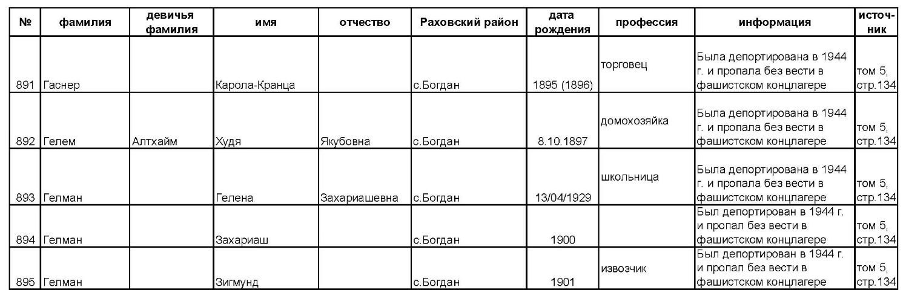
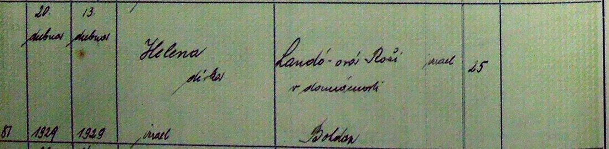
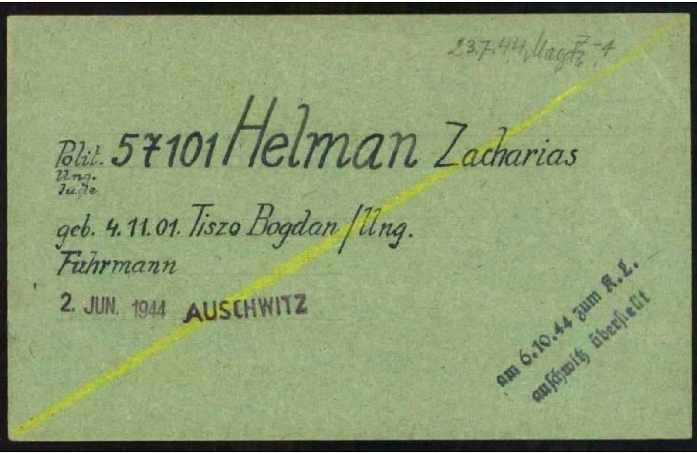
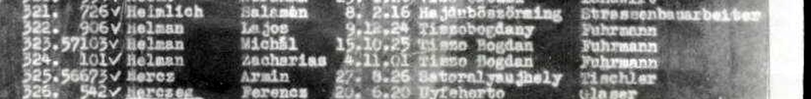
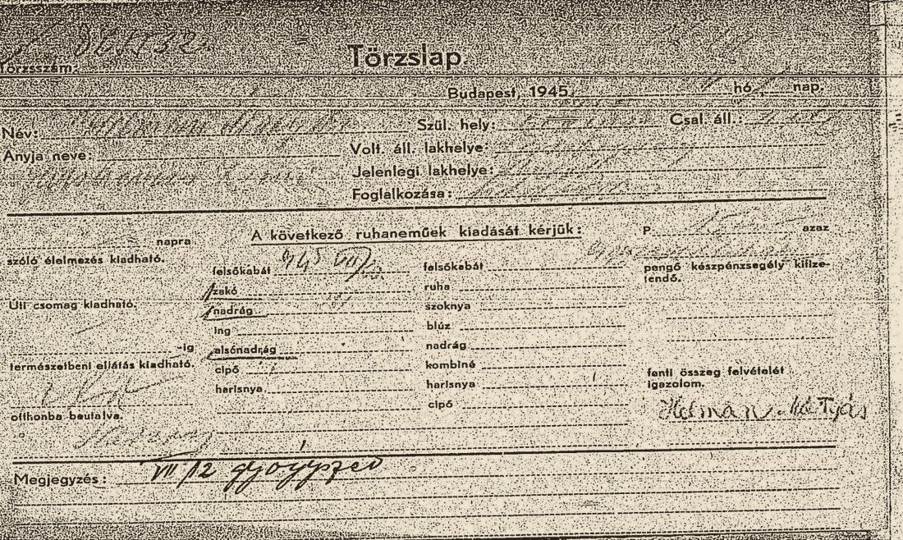
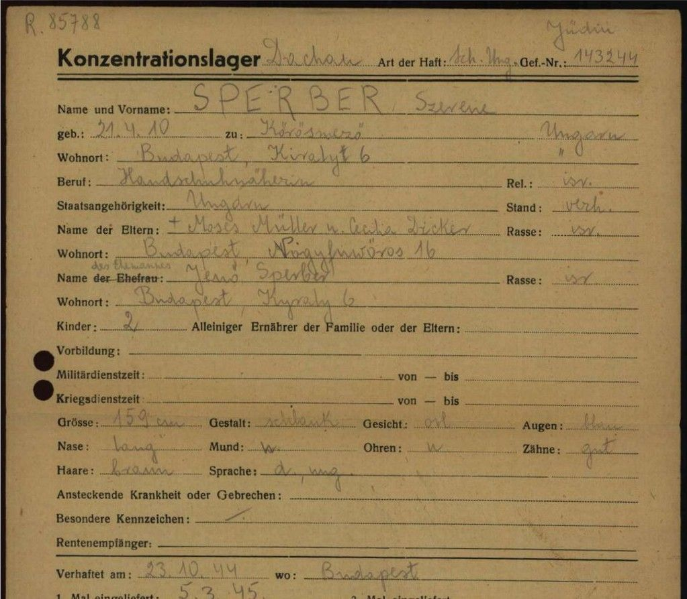
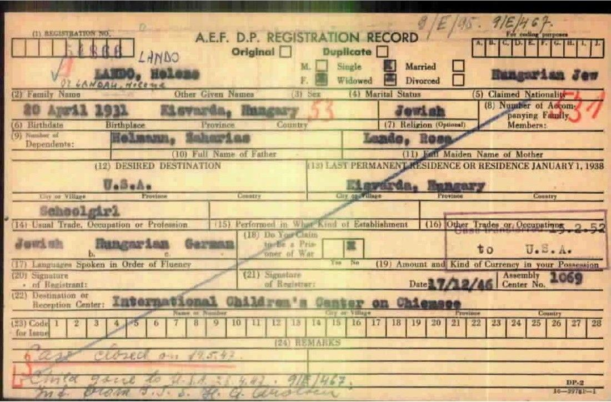

The Method
How to do this yourself
Four steps, the hints I wish I’d had, the walls I hit, and the mistakes I made along the way. No training, no subscription, and no trip to an archive. Almost all of it can be done from a kitchen table, for free.


Tap a box to jump to that step. A set-aside lead can come back, or be crossed off once the sources show it’s someone else. “Set aside” links to my mistakes, further down this page. Every name recovered goes back in as the next search, so each find leads to more.
Step 1Normalize the name
Write down every form of the name before you search, including the mother’s.
Write down every version of the name before you search
Before searching anything. The surname as the family says it, as a German clerk would spell it, as a Hungarian registrar would, and as it comes back out of Cyrillic. Helman, Hellmann, Hilman, and in Soviet records Gelman, because Russian has no H. Landó, Landa, Landau.
Keep the list beside you. Almost every database is a name index, and a name index only returns what you type. This is where an ordinary search fails, and where most people stop.
Do this: start a name matrix, one row per person and one column per language, and a birth-date matrix listing every date each record gives and its source. Then write the surname five ways on paper. As your family says it. As a German clerk would. As a Hungarian registrar would. Coming back out of Cyrillic, where H becomes G. And the mother’s maiden name.


“Гелман”: Gelman, which is Helman. Cyrillic has no H“Гелена Захариашевна”: Helena, daughter of Zacharias“13/04/1929”: her birthday- “Гелман”: Gelman, which is Helman. Cyrillic has no H
- “Гелена Захариашевна”: Helena, daughter of Zacharias
- “13/04/1929”: her birthday
Search the mother’s maiden name too
The step almost everyone skips, and the one that finds people. Across much of Subcarpathia and Galicia, marriages that were religious only were not recognized by the state, so children were entered in the civil register under their mother’s surname, with the father acknowledging paternity in the margin.
My grandmother’s own birth record carries no surname for her at all. She is filed under Landó. Anyone searching Helman would never have found her.
Do this: run every search twice, once under the father’s surname and once under the mother’s.


“Helena”: her first name, and no surname“Landó-ová Roži”: Roza Landó, her mother- “Helena”: her first name, and no surname
- “Landó-ová Roži”: Roza Landó, her mother
Step 2Reconstruct the road
Rebuild the road stage by stage: arrest, ghetto, transport, camp, liberation, displaced-persons camp, ship. Every stage had to make a document.
Work out where the paperwork had to put them
Follow the paperwork, not the name: arrest, ghetto, transport, camp registration, transfer, subcamp, liberation, displaced-persons camp, emigration. Each stage had to generate a document, and each document names a date and a place.
Someone who cannot be found by name can still be found by where the system was obliged to record them.
Do this: write out the stages in order for the person you want, check each date against your birth-date matrix, and search for the stage when the name fails. A transport list is easier to find than a person.


“Helman Zacharias”: Helen’s father, prisoner 57101“23.7.44 Magd.”: sent to Magdeburg, 23 July 1944“6.10.44 … Auschwitz”: sent back, 6 October- “Helman Zacharias”: Helen’s father, prisoner 57101
- “23.7.44 Magd.”: sent to Magdeburg, 23 July 1944
- “6.10.44 … Auschwitz”: sent back, 6 October
Read the sequence, not just the entry
A prisoner number is not only a label. It is a position in a list, and lists have neighbors. Transports were registered in order of arrival, and rosters were often compiled alphabetically, so people from one place and one family fall together on the page.
This is how the second and third men in this case were found: not by searching for them, but by reading the lines above and below someone already known.
Do this: when you find a record with a number on it, go and read the numbers either side of it.


322 · 323 · 324: three Helmans, one after another“Tisza Bogdan · Fuhrmann”: same village, same trade- 322 · 323 · 324: three Helmans, one after another
- “Tisza Bogdan · Fuhrmann”: same village, same trade
Step 3Correlate across archives, with AI
Cross-check across collections, languages and scripts. AI reads; you check.
Let AI do the cross-checking
Link one individual across a dozen collections, languages and scripts far faster than anyone could by hand: camp records, civil registers, censuses, victim databases, cemetery transcriptions, directories, testimony. This is the step that makes the search possible from a desk, and the only step here that is new.
Do this: paste what you have found into an AI assistant and ask it to find the contradictions and the gaps. Then go and check what it tells you.


“Név” = Name: AI read the Hungarian“We request the issue of the following clothing”“Helman Mátyás”: his signature, a new form of his name- “Név” = Name: AI read the Hungarian
- “We request the issue of the following clothing”
- “Helman Mátyás”: his signature, a new form of his name
If someone left no record, search the people around them
Trace the people around them instead. Cousins, neighbors, anyone from the same village on the same transport. Their records will place the person you want in a time and a place, and sometimes name them outright.
Nearly everything recovered in this case came from following someone other than the person being looked for. If your grandmother is invisible, find her neighbors.
Do this: search the village, not the person. Then read every name it returns.


“SPERBER, Szerene”: her cousin, whom she lived with“Budapest, Kiralyt 6”: the house Helen lived in“Verhaftet am 23.10.44”: arrested 23 October 1944- “SPERBER, Szerene”: her cousin, whom she lived with
- “Budapest, Kiralyt 6”: the house Helen lived in
- “Verhaftet am 23.10.44”: arrested 23 October 1944
Step 4Verify against the original
Keep a finding only when the original document confirms it and independent sources agree.
Check every match against the original document
Never against an index entry. Indexes are transcriptions and transcriptions carry errors, and an error copied forward becomes a fact nobody questions. Open the register image, read the fields, and confirm the parents.
AI accelerates the search. It does not decide anything.
Do this: never stop at the index. Open the register image and read the parents’ names yourself.


“20 April 1931”: wrong. Born 1929“Kisvarda”: wrong. Her friend Ibi’s town“Helmann, Zaharias”: her father. True“Lando, Rosa”: her mother. True- “20 April 1931”: wrong. Born 1929
- “Kisvarda”: wrong. Her friend Ibi’s town
- “Helmann, Zaharias”: her father. True
- “Lando, Rosa”: her mother. True
Four rules that matter more than any database
A name written five ways across five countries is one person, not five problems. Expect the spelling to change. Dates and places were sometimes falsified on purpose, to survive. Set a candidate aside only when independent sources, weighed together, show it is someone else, never because the spelling moved.
Names, dates and even birthplaces were changed after the war; parents’ names almost never were. Helen’s 1946 papers carry a false birth year and a borrowed birthplace, but her father and mother are right, and that is how she was found.
A name in a family story is a lead. The “Mrs. Fisher” in Ibi’s memoir was Greta Fischer. Write down every name anyone mentions, however small.
Test it against the records, the way you test the records against each other. Hold a conclusion only where independent kinds of record agree without contradicting one another, and check every match against the original document. If it’s probable, I say probable. If two records disagree, I say so, instead of picking the one I like.
Records first, faces last
I identify people in old photographs by starting with the records, not the face. This is how I found Helen and her best friend Ibi in a photograph of sixty young people.
- Follow the road. Their records told me the place, the group and the dates: the Dror Habonim group, at Kloster Indersdorf, in 1946.
- Look only at photographs of that group, in that place, at that time. The first ones I found showed about fifteen of the group, and neither girl was there. Then I found the full group photograph.
- Only then, the faces. I found Ibi first and knew Helen had to be close. She was. I compared them with photographs of each girl near that age, and with my own memory of them.
- Test it without leading anyone. I asked people who knew them whether they saw her, without saying where I thought she was. Three different AI tools compared the faces, separately.
- Confirm. Ibi’s son confirmed his mother. With the records behind it, I sent the identification to Anna Andlauer, the historian of Kloster Indersdorf, and she and Shoshan Porat accepted it.
The records decide who could be in the picture. The face only chooses between those names.
“Machines for the reading, family for the recognizing.”
Helpful hintsThings that would have saved me months
Pick one name and one town. I started with one prisoner card. Get that one person right, and the rest of the family starts to appear around them.
I keep two: every spelling of every name, and every birth date each record gives. They look tedious. They are the reason I found Helen at all.
On a Page of Testimony, the person who filed it was often a relative who survived. That name can lead you to living cousins.
I don’t read Hungarian, Czech or Russian, so AI helps me read. But I check every answer against the page, because it gets things wrong.
Write down every lead you set aside and why. It saves you from chasing it again, and you can reopen it if something new turns up.
Helen’s village was Czechoslovak, then Hungarian, and is Ukrainian today. Its records are split between Uzhhorod and Baia Mare. One great-great-grandmother’s birth sat only in the Baia Mare set, spelled “Szare”.
Three times, Helen’s 2008 tape seemed wrong. Each time, Helen was right and the written summary of the tape was wrong.
Helen left almost no records after the war. Her best friend Ibi’s memoir, unread for 25 years and filed as a love story, filled in her road.
I sent the group photo to Ibi’s son without saying where to look. He found his mother on his own.
One card’s prisoner number led to the arrival list. The list led to the surname, the surname to the village, and the village to the archive.
The walls I hit, and how I got around them
Every one of these stopped me cold at some point. Each comes with the actual record that showed me the way through. Tap a record to see it full size.
Step 1 · Normalize back to the diagram ↑
H becomes G
Russian has no letter H, so Soviet clerks wrote it as Г. A name written in Cyrillic and turned back into our alphabet comes out with a G: Helman becomes Gelman, and Helena, her name on paper, becomes Gelena. Search the Cyrillic spellings too, or you will miss every record made in Soviet times.
The same list shows two more things. It gives a patronymic, a “father’s name” (Zachariashevna: daughter of Zacharias). And it lists Helen as deported and lost, when she survived. Lists made after the war can be wrong too.
What to do: search your surname with G in place of H, and with Ch, Kh and Gh.
- 1ГелманGelman: Helman, with the H turned into a G
- 2Гелена ЗахариашевнаGelena, daughter of Zacharias: her father’s name is built in
- 313/04/1929her true birth date
- 4Была депортирована… пропала без вести“deported, missing”: wrong, she survived
One person, many names: the name matrix
Every clerk wrote what they heard, in their own language. Before searching, I build a matrix of every form of each name.
Helen: Helman, Lando, Landó, Laundav; Helena, Chawa, Hava; and, probably, Hodel, the family’s Yiddish name for her.
Michal: Mihály, Mátyás.
Lajos: Leib, Léb.
Michal signed this Budapest aid form in 1945 as “Helman Mátyás”. Without the matrix, it looks like a stranger.
What to do: make a name matrix. One row per person, one column per language: Hungarian, Czech, German, Yiddish, Hebrew, Russian. Add every new spelling the moment you find it.

- 1Helman MátyásMichal’s own signature, under a third first name
Children filed under the mother’s surname
Helen’s parents married in a religious ceremony, not a civil one. The state did not recognize the marriage, so every child was entered under the mother’s maiden name, Landó. Only the father’s signature in the margin ties Helen to Helman.
This was ordinary across Subcarpathia and Galicia. It is the most common wall in this work, and the reason so many grandmothers seem to vanish.
What to do: see step 1b, and search the mother’s maiden name every time.

- 1Helenaher first name, and no surname at all
- 2Landó-ová Roši · israel · 25her mother, Jewish, 25: the baby is filed under her name
Step 2 · Reconstruct back to the diagram ↑
Birth dates that move
Survivors sometimes made themselves older, to pass a selection for work, or younger, to qualify for a children’s home or a children’s emigration program. Helen was born in 1929. On her papers from 1946 she was born in 1931, and she kept that date.
Clerks moved dates too. Zacharias’s Buchenwald card says 4.11.01. His birth register says 11 April 1901: the same numbers, with the day and month swapped. Even Helen’s birthday moved. She celebrated 20 April all her life; that was the day her birth was registered. She was born on the 13th.
So I keep a birth-date matrix too: every date each record gives, and where it came from.
| Date on the record | Record |
|---|---|
| 13 April 1929 | Civil birth register, Bohdan (born) |
| 20 April 1929 | Same entry (registered) |
| 13/04/1929 | Rachov district list, Yad Vashem |
| 20 April 1931 | DP registration, Indersdorf, 1946 |
| 1931, April 20 | Her own recorded testimony, 2008 |
What to do: make a birth-date matrix for each person. Then search a range of two or three years either side, and try the day and month the other way round.

- 1Helman Zachariasthe man
- 2Geb. am: 4.11.01reads as 4 November 1901; really 11 April 1901, day and month swapped
- 357101his prisoner number
Step 3 · Correlate back to the diagram ↑
One place, several names
Borders moved, so place names did too. Helen’s village is Tiszabogdány in Hungarian, Bohdan in Czech and Ukrainian, and Bogdan in Yiddish and Russian. On the records above it is “Tisza Bogdan” (Zacharias’s card), “с. Богдан” (the Russian list) and Bohdan (the birth register). Kassa is Košice. Munkács is Mukachevo.
What to do: look up every name your family’s town has had, and search each one.
Surnames that mean “son of”
Around Helen’s villages, many surnames began as a father’s name: Davidovics (son of David), Lebovics (son of Leib). That makes them very common, so a surname match alone proves almost nothing. Before you accept a match, a second parent has to match too.
What to do: with a common surname, search on the mother’s name as well, and only keep records where both parents fit.
Step 4 · Verify back to the diagram ↑
A birthplace borrowed from a friend
Helen’s papers after the war say she was born in Kisvárda, Hungary. She wasn’t. Kisvárda was the town of her best friend, Ibi. On this one card her surname is Laundav (Landó, as a clerk heard it), her first name is Chawa, her year is 1931 and her town is Ibi’s. Only her parents’ names are true, and they are what identify her.
What to do: when a record is right in some fields and wrong in others, trust the parents. That is rule 2, above.

- 1LAUNDAV CHAWALandó, as a clerk heard it, and Chawa, her Hebrew name: not wrong, just hard to search
- 2[2]0-IV-193120 April 1931: two years off
- 3KISWARDA HUNGARIAKisvárda: her best friend Ibi’s town
- 4HELMAN ZACHARIA · LAUNDAV R.her parents: the only thing right
“The system built to separate them filed them together.”
Set aside · my mistakesMistakes I made
I got things wrong. Every one of these felt like a breakthrough when I found it, and each one fell apart when I checked it against other records. I keep the list so I don’t chase them again, and so you don’t have to.
The passport that wasn’t David’s
An archive passport file for a “Dávid”: right era, right archive.
Set asideThe file itself shows a different man: David Auslender, born 1907 in Turja Remeta, going to New York. Helen’s uncle David was born in 1902 in Bogdan and went east.
Read the archive’s own description of the collection before celebrating the hit.
Two Rozas, two villages
A Roza Landa, born 1911, was once my leading candidate for Helen’s mother.
Set asideThe birth records of Roza’s own children name their mother and her village, and they point to a different woman.
The children’s records identify the mother.
A great-great-grandmother “née Samson”
I built Helen’s grandmother Feige from another Fani Dikker of the same region.
Set asideFour independent records make Feige a Dikker of Delatyn, and her marriage record names her own parents. The other Fani was still married in the 1921 census.
Separate same-name women by their parents.
The ship to Australia
“Mr. L. Helman”, London to Sydney, 1949, which I took for Lajos.
Set asideFamily testimony: Lajos stayed in the Soviet Union and reached Israel much later.
Keep “probable” labeled until a source tests it.
The wrong kibbutz
I placed one of Helen’s cousins at a kibbutz in the right region, of the right movement.
Set asideA missing name: she is not in that kibbutz’s memorial list of its members. Her brother, and both her surnames, are documented at another.
A missing name in the right list is evidence too.
And the opposite warning: a Page of Testimony I had set aside as a namesake came back, once I saw who had filed it. It was family.
What to expect
Months, not days. Most of what I used is free and online.
Most people deported in 1944 were never registered, and film was scarce. When I started, I had no photo of Helen’s parents, no grave and only one document: the prisoner card my mother found.
One card says “Kremsdorf”. No such place exists. A clerk heard “Rehmsdorf” and typed what he heard.
Helen said her cousins had all disappeared. Most of them survived. Some questions stay open, and that’s fine: say so.
This work is heavy. Go gently.
Many of us never knew our family’s full story, and often our parents didn’t either. The gaps are where the records come in.
A few years ago I couldn’t have shown you any of this. Arolsen put its records online in 2019, and I only started digging in 2026.
I read one camp list and moved on. When I went back to it, his nephews were right above him.
When the databases run dry, set that branch aside. Write to a person instead, or count what you have already proven.
No one holds the whole story. I had the name. A cousin had the relation.
You will read about the worst things that happened to people you love. Take breaks. Talk to someone.
Where to look: every database I usedSearch them by place or record type, or show only the free ones. Most are free.Open the databases →
If you get stuck
This guide is free, and so are most of the databases. I’m one person, and I can’t research every family for free, but I help where I can, and I hope you’ll try it yourself. For research consultations, write to me: sam@engineeringremembrance.org